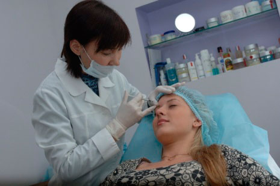
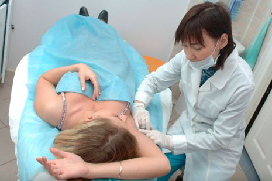

Коррекция мимических морщин – Ботокс, Диспорт
В последнее время процедуры с использованием препаратов ботокс и диспорт стали признанным лидером эстетической медицины, ведь это минимально агрессивный способ подтяжки лица (с их применением осуществляется удаление мимических морщин и коррекция мимических морщин)! Ботокс, диспорт – препараты ботулотоксина – вводятся в мимические мышцы лица, блокируют мышечное напряжение и таким образом устраняют мимические морщины – «гусиные лапки» около глаз, вокруг губ и в области шеи. Под воздействием препаратов мышцы не атрофируются, а расслабляются, и кожа восстанавливает свою эластичность.
«Уколы красоты», будучи медицинской процедурой, конечно, могут подойти не всем – есть противопоказания, которые обязательно учтет врач-косметолог. В зависимости от вашего возраста, состояния здоровья и пожеланий для вас индивидуально подберут препараты в определенной дозе.
Ботулинический токсин типа «А» является важным средством в омоложении лица. Ботокс, Диспорт имеют официальную регистрацию для применения в Эстетической медицине на территории Российской Федерации.
показания
- Мимические морщины в области межбровья;
- Мимические горизонтальные морщины лба;
- Морщины в области углов глаз;
- Глубокие складки лица;
- В качестве профилактики старческой атрофии кожи лица и шеи.
Вводится непосредственно в предполагаемое место действия. Ботокс, Диспорт можно инъецировать до, после и даже в сочетании с заполнителями, лазерами, химическими пилингами и лицевой хирургии. Сочетание ботулинического токсина с другими методами помогает сохранить и поддержать результат в долговременном плане.
Дозировка: Дозы (количество единиц) назначаются индивидуально для каждого пациента в соответствии с характером, выраженностью и локализацией мышечной гиперактивности.
Действие препарата после принятия процедуры начинается через 2-7 дней, а длительность 4-6 мес. Более стойкий эффект достигается через 2-3 процедуры.
Безопасность и хорошая переносимость пациентами препаратов подтверждена многолетним опытом применения и клиническими испытаниями.
Лечение Гипергидроза (повышенное потоотделение)
Гипергидроз - одна из социально значимых медицинских проблем. Чрезмерное потоотделение нередко приводит к развитию ряда дерматологических заболеваний, влияет на профессиональную и социальную деятельность человека.
Применение данной технологии позволяет достичь полной блокады потоотделения на срок от 3 до 12 месяцев. Для определения наилучших результатов от лечения Ботулинического токсина типа «А» следует проконсультироваться с врачом.